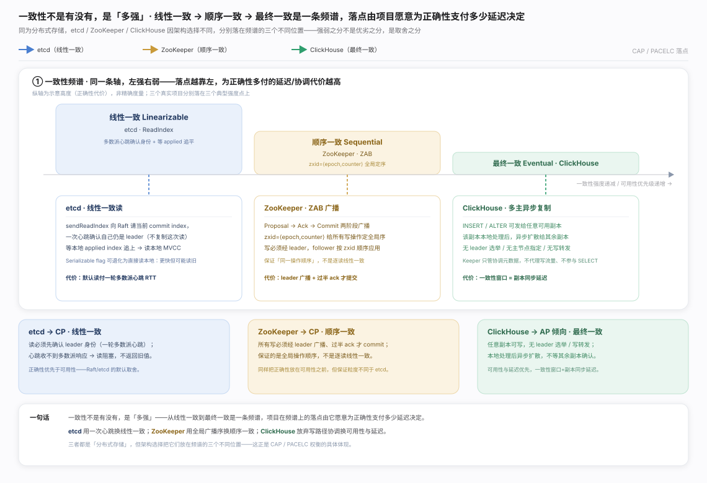
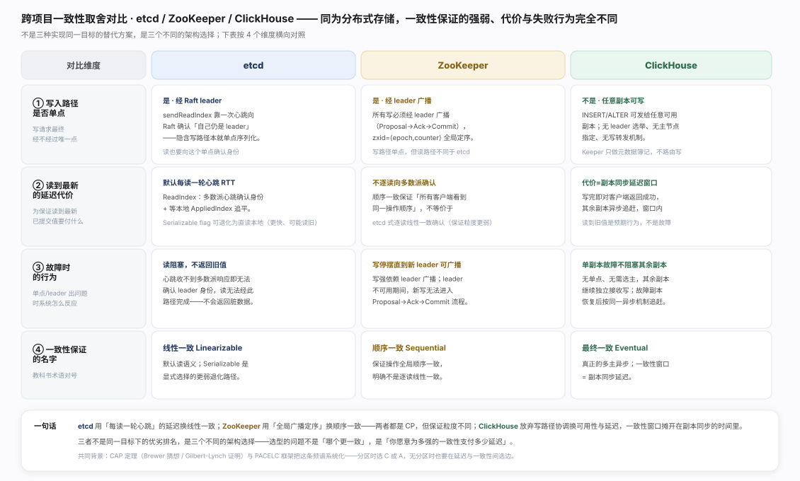

Consistency & CAP · 一致性模型与 CAP 权衡

一致性不是「有没有」，是「多强」——线性一致到最终一致是一条频谱，落点取决于项目愿为正确性支付多少延迟。CAP 讲分区下 C 与 A 二选一，PACELC 把同一取舍延伸到无分区的日常（延迟 L vs 一致性 C）。etcd 线性一致 / ZooKeeper 顺序一致 / ClickHouse 最终一致，无优劣、只有代价之别，频谱与三个落点见生态图。

etcd · 线性一致：默认走 ReadIndex——先向 Raft 确认「此刻仍是 leader」，再等本地 AppliedIndex 追上才读，两步共同构成正确性证明；Serializable 可跳过确认换更低延迟但可能读旧。流程与代价见图。

ZooKeeper · 顺序一致：ZAB 用 zxid 给写定全局序、过半 Ack 才 Commit，写路径与 etcd 同构。分歧在读路径——只保证所有客户端看到同一顺序，不逐次确认读到的是最新提交，比线性一致弱一档，时序见图。

ClickHouse · 最终一致：多主异步复制，任意副本本地返回后异步扩散，Keeper 只协调元数据、不碰数据流。一致性窗口 = 副本同步延迟，窗口内读旧值是设计使然、非故障，机制见图。

分歧不在「谁更好」，在愿为正确性支付多少延迟、把代价放读路径还是写路径：etcd/ZooKeeper 靠写路径单点序列化换更强保证、也更贵；ClickHouse 无此单点故退到最终一致，故障行为随之分裂为 CP 与 AP。四维对照见图。一句话总纲：选型该问的不是「谁一致性更强」，而是「本场景能否接受读到旧值、能接受多久」。
Eric A. Brewer 在 2000 年 PODC 会议上提出 CAP 猜想；Seth Gilbert 与 Nancy Lynch 在 *Brewer's Conjecture and the Feasibility of Consistent, Available, Partition-Tolerant Web Services*（ACM SIGACT News, 2002）给出形式化证明 —— 本轮未能核实该论文当前稳定的官方深链接，故按标题/venue 引用，不附具体 URL，避免猜测链接。
Daniel Abadi, *Consistency Tradeoffs in Modern Distributed Database System Design*（IEEE Computer, 2012）—— 提出 PACELC 框架，把 CAP 的分区场景之外「延迟 vs 一致性」的日常权衡也纳入同一套分析。
etcd · API guarantees（含线性一致读语义）